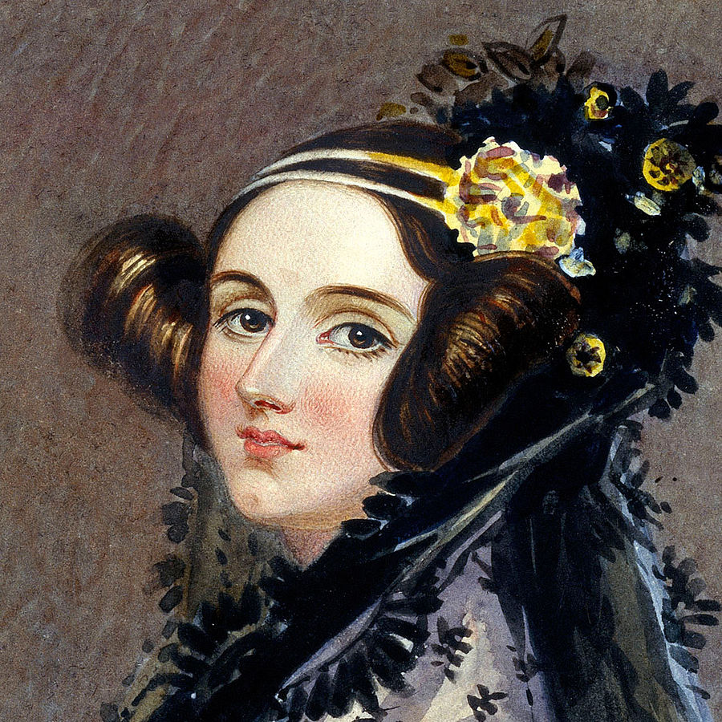
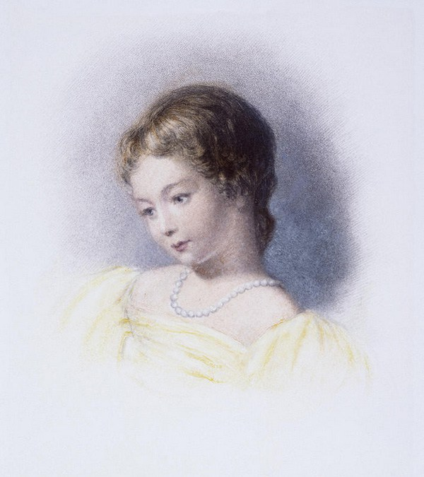

Augusta Ada King, condessa de Lovelace, nasceu em Londres em 1815, mais conhecida como Ada Lovelace, foi a primeira pessoa a escrever um algoritmo para ser processado por uma máquina na história da computação.
Seu pai era o poeta romântico Lord Byron, conhecido por seus exageros como ter um urso domesticado em seu quarto e por atos (incomuns para a época), como se relacionar com homens e mulheres. Sua mãe era a rica e culta Annabella Milbanke, apaixonada por matemática e pouco paciente com as maluquices do marido.
Lord Byron bebia demais o que resultou no divórcio quando Ada tinha só 5 semanas de vida. Annabella foi mãe solo preocupada em garantir que Ada não ficasse parecida com o pai. Investiu na educação rigorosa da menina contratando os melhores professores. Acreditava que, se a filha se interessasse por matemática e ciências, se afastaria da poesia e das tendências excêntricas herdadas do pai.
Ada era fascinada por matemática e poesia (para desespero de sua mãe). Aos doze anos, encantou-se pela engenharia mecânica e escreveu um livro chamado Flyology (ou Voologia), com desenhos de um plano para a construção de uma máquina de voar. Ao contar para sua mãe sobre a máquina, Annabelle achou que Ada estava se desviando dos estudos e a reprimiu. Então, pediu para que Ada focasse em se tornar uma dama.
Aos 17 anos, Ada foi apresentada à corte e passou a ser convidada para festas na cidade. Seu jeito inteligente e rápida atraiu muitos solteiros, mas ela se interessou por um velho matemático chamado Charles Babage, que lhe contou sobre a invenção que trabalhava há anos, a “máquina diferencial”, que fazia grandes cálculos.
Charles gostou da jovem, ela era uma das poucas pessoas que se interessou e entendeu suas invenções. Quando Ada conheceu a máquina diferencial, viu nela muitas possibilidades que nem mesmo Charles havia pensado. O entusiasmo da jovem matemática o impressionava.